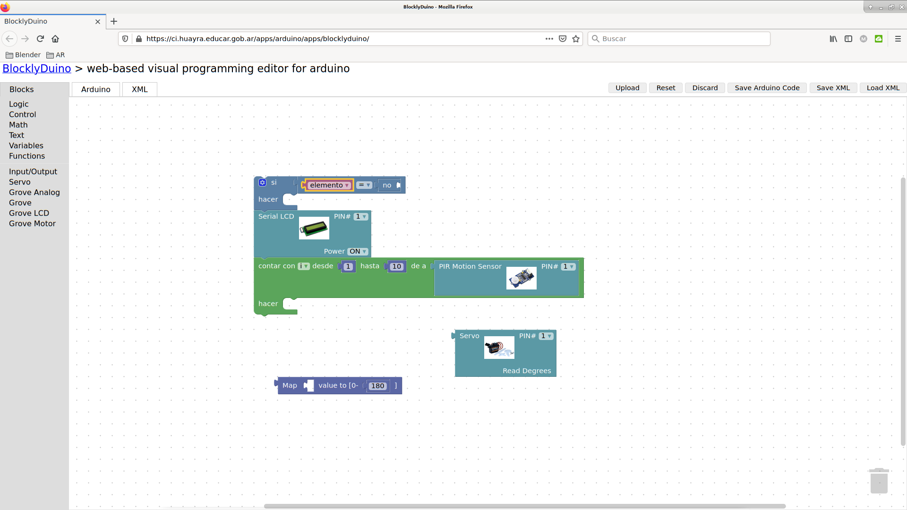
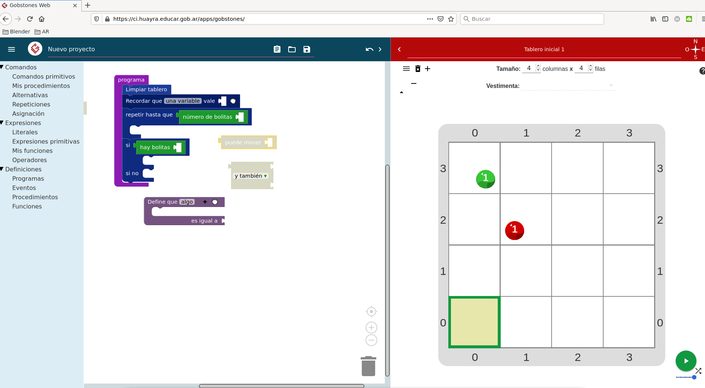
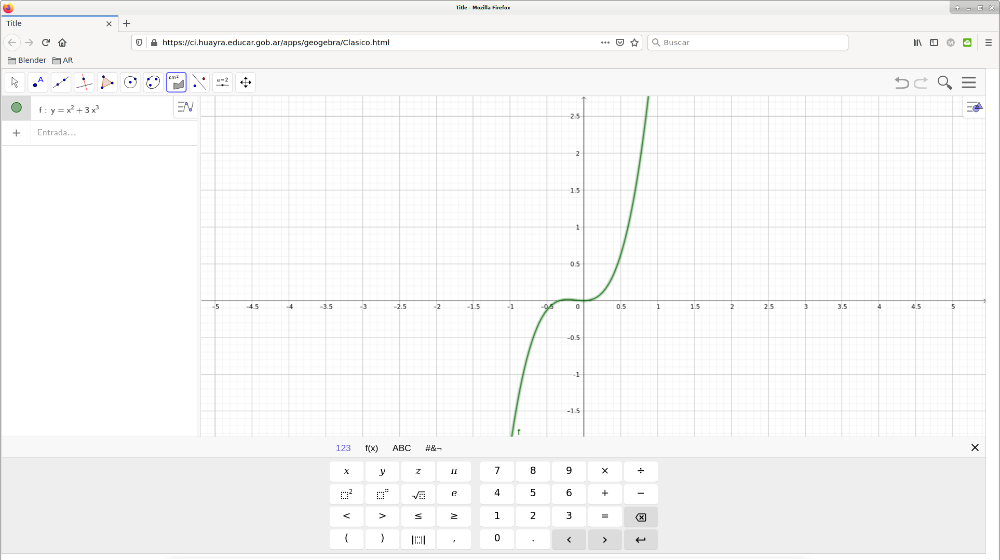
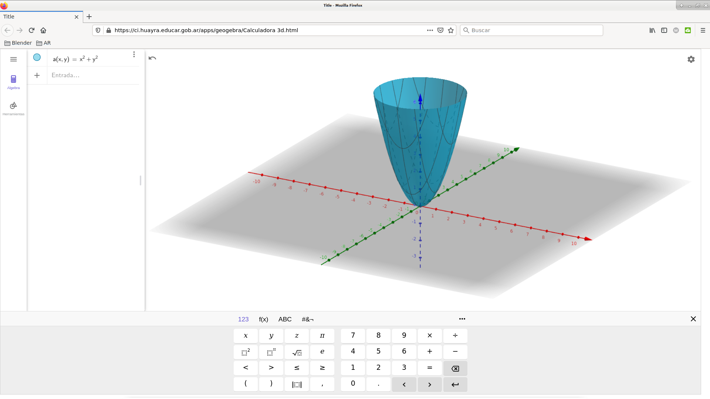
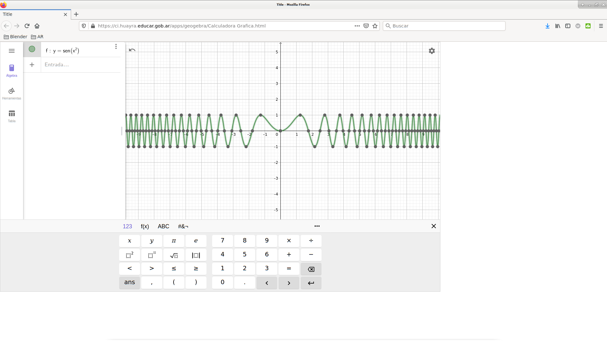
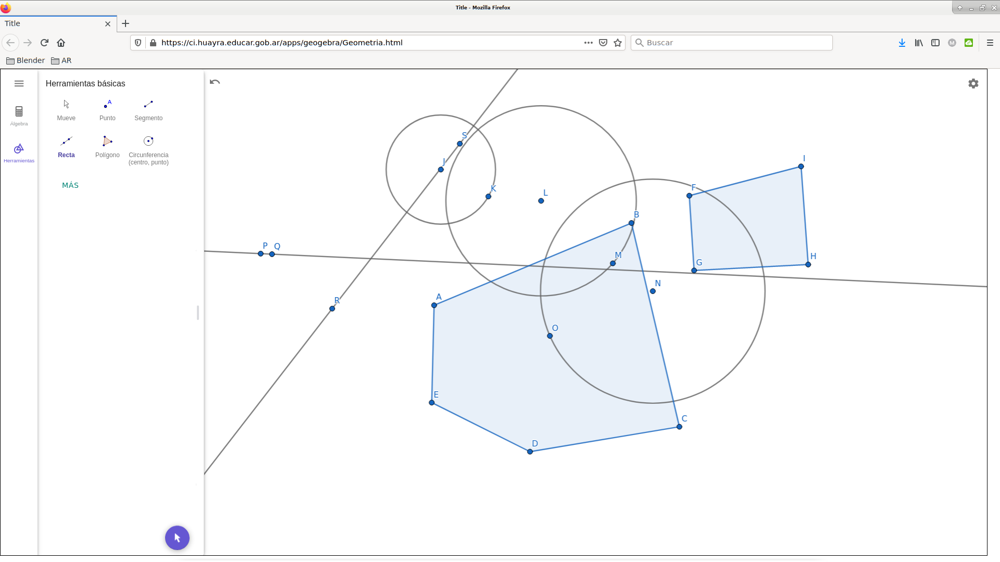

 | Arduino Blockly es un editor visual para programar en Arduino |
 | Gobstones es un lenguaje pensado y diseñado para la enseñanza introductoria a la programación. |
 | GeoGebra Clásico ofrece diversas vistas para los objetos matemáticos. Cada vista presenta su propia barra de herramientas con un repertorio de herramientas y comandos, así como Operadores y Funciones que permiten crear construcciones dinámicas con diferentes representaciones de los objetos matemáticos. |
 | GeoGebra 3D es un graficador 3D de GeoGebra: grafica funciones 3D, representa superficies, construye sólidos ¡y mucho más! |
 | GeoGebra Calculadora es una versión reducida de Geogebra, resuelve problemas matemáticos fácilmente, grafica funciones y ecuaciones, domina la estadística y el cálculo, combina tu trabajo con geometría interactiva |
 | GeoGebra Geometría es un constructor geométrico en línea, interactivo de GeoGebra: crea triángulos, círculos, ángulos, transformaciones ¡y mucho más! |